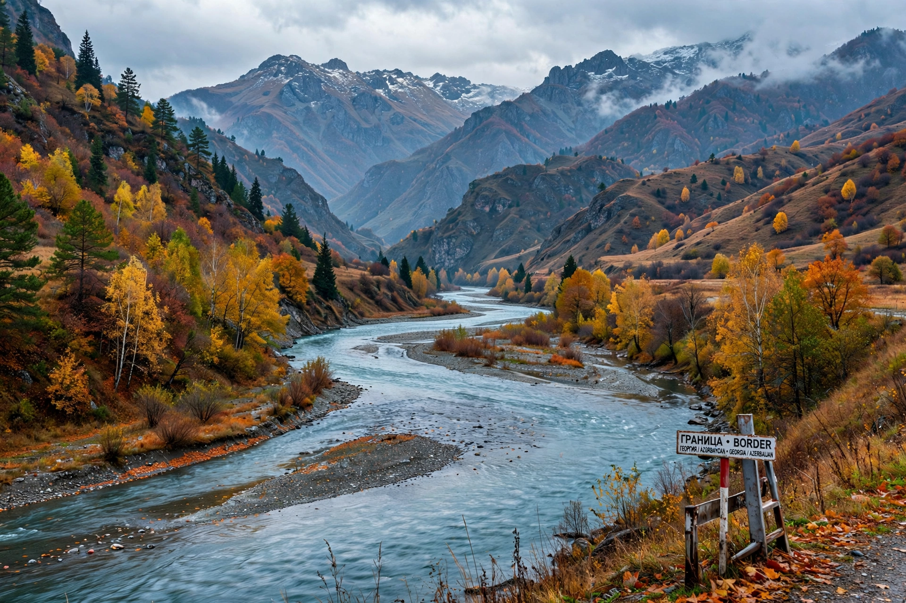

The Aras (also known as Araks, Araxes, or Araz) is a transboundary river in the Caucasus. It rises in eastern Turkey and flows along the borders between Turkey and Armenia, between Turkey and the Nakhchivan exclave of Azerbaijan, between Iran and both Azerbaijan and Armenia, and, finally, through Azerbaijan where it joins the Kura River. It drains the south side of the Lesser Caucasus Mountains; the Kura drains the north.

| Aras | |
| Source | Bingöl Mountains, Erzurum Province, Turkey |
|---|---|
| Mouth | Kura River, Azerbaijan (Caspian Sea basin) |
| Length | 1,072 km (666 mi) |
| Basin size | ~102,000 km² |
| Countries | Turkey, Armenia, Iran, Azerbaijan |
The Aras was the legendary Araxes of classical antiquity, mentioned by Herodotus and other writers; it figured in the myth of Jason and the Golden Fleece region of Colchis. In the early 19th century, the Treaties of Gulistan (1813) and Turkmenchay (1828) between the Russian Empire and Qajar Persia fixed the Aras as the boundary between the two empires, a line that later became the Soviet–Iranian and Soviet–Turkish border and, after 1991, borders of the independent republics of Armenia and Azerbaijan with Iran and Turkey.
The river is heavily used for irrigation and hydroelectric power, with major dams including the Khoda Afarin and Giz Galasi complexes on the Iran–Azerbaijan border. Its floodplain supports agriculture — cotton, wheat, and orchards — but the river also suffers from pollution and disputes over water allocation among riparian states.